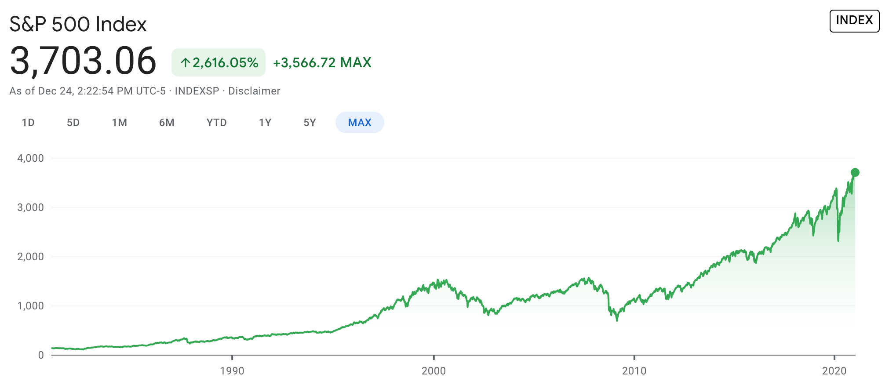

RSS Feed
RSS Feed
Stock Market Adventures: Introduction
27 Dec 2020Part of a series on Finance.
In recent months, I've taken an interest in the stock market, and started trading. Now that I've figured a few things about it, I want to share a bit of information about how I trade.
But before I get there, I want to give you the backstory of how I came to trade. It involves many details that I find interesting & relevant, like index funds and market cycles.
Invest in ETFs?
My interest in the stock market started very pragmatic. I had some money set aside, and it was gathering dust. My bank's savings account nets me a 0.10% interest, which is both a joke in poor taste, and a competitive market rate. I needed better yield.
I actually already knew the answer: invest in ETFs (Exchange Traded Funds), in particular funds tracking a broad market index ("index funds"). The target index could be the ever-popular S&P 500 (indexing the 500 biggest US companies), or if I wanted to be more diversified than just the US, the MSCI World index, which tries to be representative of the world's economy.
This is the boring-as-it-gets investment strategy. It's quite safe too. Sure, there are recessions. But the S&P 500 has grown historically at > 5% on average.
How safe is it? Pretty safe, barring a zombie apocalypse or a nuclear holocaust. All thanks to compounding.
I stumbled on an interesting what-if video the other day: "What if you invested only at market peaks?"
In fact, even if you had invested a sum of 230k$ (2k$ annual payment, increased by 2k$ every decade) only at the peak that preceded each recession for the period starting in 1977, you'd still end up with 1M$ by retirement. It bears repeating this is the absolute worst-case scenario. If instead, you'd just invested every year, you'd end up with 2.5M$ instead.
This was a simple solution to my problem. But at the time, I had some misgivings. First, the market was at an all-time high, and there was a lot of indefinite unease floating around.
In fact, since the Coronavirus crisis, more definite criticism has emerged. Legendary investor Charlie Munger is afraid about record-like valuations and inflation by means of quantitative easing. Other people worry about many companies (and in particular tech companies) being valued at historically high P/E multipliers.
(By the way, I've written about Charlie Munger's philosophy before.)
So there was a possibility that market would take a hit for ~10 years. If you look at the S&P 500 chart, this is what happened after 2000. The index only recovered in 2008, then plunged again to only recover in 2012. 0% profit over 12 years is a long time with no returns, even if the market growth has since made up for that slump.

By the way, if you look at the slope of that graph in recent years, you can understand why people are uneasy about us being at the peak of a bubble.
Now there was, maybe, a way out: you could time the market. One option is wait for the crash to get in. The only issue is that it might be in 1 years or in 10, and your fear of losses could end up costing you more in lost profits. Another strategy is to sell at the start of the crash and buy back at the bottom. But that's hard to distinguish a normal retracement from a temporary panic, and from the start of a crash. Timing the bottom is similarly not so easy.
It's also common wisdom that timing the market is typically a bad idea. (Just like it is it "common wisdom" that trading is ruinous. Yet some people do both consistently and successfully. We'll get back to that later.)
At this stage, only one thing was clear: I had to learn more before I came out with a plan.
Getting the Ball Rolling
Everything I've laid out so far had mostly been background thinking, but I'd been busy with other things.
I finally decided to give myself a shove and start doing something. An extra motivation here was that a family member had made quite a bit of money investing in Tesla options. Him and my brother were very bullish on the company and claimed of a ton of upside. I found myself agreeing about that for the short-term.
And so I decided to get my feet wet with brokers, and to buy a Tesla share (1.6k$ at the time) as well as investing very small amounts in ETFs.
There is a lot to be said for getting the ball rolling like this. This was a small enough amount of money that I could afford to lose it all (and obviously, that was almost impossible anyway), but more than enough for me to care. I started having questions and googling around for answers, and found quite a treasure trove of information online, in particular on YouTube.
Some on these videos were on active investing, and some were on trading. I started entertaining the notion that I could make some money in this way, and I began running some small experiments.
Penny Stocks
I started buying some stocks, for no more than 200€. Because that's quite a low amount, I was driven to buy penny stocks. Those are also often volatile — very risky, but potentially profitable.
It didn't go incredibly well, but that wasn't particularly unexpected. If common wisdom treats trading like gambling, penny stocks are treated like Russian roulette.
I lost some money (not too much, less than I'd made on my Tesla trade and on a couple other blue-chip stock trades). But I did learn a lot.
In fact I think's it's very hard to learn to trade penny stocks other than by trading them. You can't really learn anything by looking at past scenarios: you'll get a full dose of hindsight bias. And penny stock trading is all about timing entries (buying) and exits (selling).
You could potentially learn by paper trading, but you need to be very disciplined and not make any excuses like "I was busy with X so this trade doesn't count". You're still going to be busy with X when you trade your own money — even if X is an emergency.
There's also a dearth of literature on the topic of penny trading. The topic is not very conducive to theorization, but rather to some sort of fingerspitzgefühl intuition. Basically, you learn to be more paranoid, and understand the (many) ways in which a penny stock trade can go south, or at least no go how you predicted. You also learn to manage your emotions, and cut your losses early.
This is not facilitated by the fact that penny stock trading is extremely speculative. To give you a very simple explanation, it's often based around "catalysts" that are expected to move the stock price. For instance: a drug being approved for a pharma company. This causes the price to run up in anticipation of the decision, and then to crash right before, or right after the decision, as people sell to secure profits. Even if the drug was approved!
It's sometimes even worse than this — there are a number of stock market pundits running pump and dump schemes. It's sometimes hard to tell apart from "regular speculation". When a pundit with many followers hypes a stock due for a catalyst, you get a de facto, quite unintentional, pump-and-dump. A whole new way to "monetize your audience".
I didn't find trading penny stocks to be the most pleasant activities, but I don't begrudge it either. I think it's quite possible to make a consistent profit doing so — if one is willing to be careful and learn from mistakes.
Irrational Fears
This brings us to an important sidebar.
I said before that the "common sense" opinion was that trading was ruinous.
And to be sure, I think that for most people, dissuading them from trading is the correct position.
That's because most people are dumb. It's not a nice thing to say, and it isn't to say they're not also nice and valuable people. But it's true.
In fact, trading tends to attract particularly dumb people. Just have a look at r/pennystocks and r/wallstreetbets, and you'll see off-the-charts stupidity.
Trading requires you to plan, think things through, manage risk/exposure, and, most of all, manage your own emotions. It's hard. Too hard for people that haven't developed these skills and virtues.
The flip side is that if you are able to do all that, trading can be a viable avenue to generating extra money.
Anybody that says that "trading is ruinous" or "trading is too risky" should feel the cognitive dissonance with the fact that they are quite a lot of people who make a consistent profit or even a living trading.
At least, there should be nuance. "Trading is too risky for most people". I agree with that. This leads to an interesting question: what sets the successful traders apart from the rest of us?
This led to me to this interesting thought: Imagine someone that has praised you for being smart and level-headed. But when you tell them you're going to trade; they try to dissuade you out of it. Either they're thoroughly confused in the sense outlined above, or their real opinion of you is that you're not, in fact, smart and level-headed enough to take on this endeavour. (Fortunately this remains a hypothetical scenario for me. Nobody has thrown shade on my trading so far).
Finally, Options
Trading penny stocks could have been profitable, but it wasn't my favourite thing. For one, the activity has inherent uncertainty. I once saw a stock trader that made hundreds of thousands of dollars in profit a year run the numbers on his trading, and his trade win rate was "only" 68%. The average profit was only ~20% higher than the average loss. Considering that these wins and losses are not distributed uniformly, it does take some mental fortitude to ride through the highs and lows. I'm really risk-averse, and even though I think I can muster the mental fortitude, I'd rather not deal with the stress if I don't have to.
Fortunately, I found a method much better suited to my taste. And it involves dealing in stock options.
Options are incredibly more flexible than stock, which you can merely buy and sell. Options enable very safe plays (though with lower payout), but also getting more leverage when you want to make aggressive moves. They can also be used to manage/lower your losses.
This increased flexibility also makes options much more interesting — and frankly more fun to work with.
In future articles, I will explain various kinds of trades I undertake using options. Stay tuned!